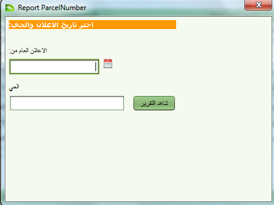

تحضير قوائم العرض العامة
في هذه الخطوة يتم تحضير عدة قوائم لاستخدامها لاعلام العامة ضمن مدة معينة . قد تحتوي هذه القوائم على لائحتين لاصحاب الاراضي واحدة مرتبة حسب المطالبين والثانية حسب القطع. كذلك يمكن نشر لائحة بالأراضي المملوكة للدولة
جميع اللوائح هي لحي ضمن نطاق التسجيل المنتظم.
الخطوات
- من لوحة المراقبة اختر التسجيل المنتظم – قائمة العرض العام . ثم اختر من القائمة الفرعية نوع القائمة التي تريد انشاؤها
- ادخل تاريخ بداية الاعلان للحي
- ادخل رقم الحي في حقل الموقع. عند طباعة اسم الحي سوف تظهر جميع الاحياء ضمن التسجيل المنتظم . اختر اسم الحي من قائمة الاحياء التي تظهر في القائمة ثم اضغط زر مشاهدة
- يتم حفظ جميع التقارير في الارشيف الالكتروني ويمكن استرجاعها بنفس الطريقة التي يتم استرجاع الوثائق بها من خلال البحث باستخدام العرض العام كمرجع لنوع الوثيقة

انظر ايضا